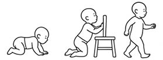

Aktywność fizyczna
Fizjologiczne ustawienie jego poszczególnych segmentów, jeśli z jakichś przyczyn nie jest blokowane i zaburzane (np. przez otoczenie i opiekunów), w automatyczny sposób dostosowuje się do wymogów poznającego świat dziecka w coraz to nowych pozycjach, pozwalając również nam, dorosłym, cieszyć się możliwościami nieograniczonego realizowania swoich pasji, samodzielnego przemieszczania się i komunikacji ze światem zewnętrznym. Zaburzenia skoordynowanej interakcji między narządem ruchu, zmysłem kinestetycznym i układem nerwowym mogą się objawiać licznymi wadami postawy. Często moglibyśmy ich uniknąć, gdybyśmy stosowali prostą profilaktykę, którą jest sam ruch oraz wykorzystanie kilku podstawowych zasad przyjmowania prawidłowych pozycji statycznych w trakcie nauki, pracy czy odpoczynku.
Liczni badacze wskazują, że częstotliwość występowania wad postawy u dzieci i młodzieży w naszym kraju z roku na rok jest coraz większa.2 Z danych Centrum Systemów Informacji Zdrowotnej, wynika, że u ok. 24% dzieci i młodzieży do 18. r.ż. stwierdzono zniekształcenia kręgosłupa, w tym u ok. 9,7% dzieci w wieku 2–9 lat.2 Istnieją liczne czynniki determinujące jakość naszej postawy. Na wiele z nich nie mamy często wpływu (faktory genetyczne, nasłonecznienie w naszym kraju itd.), jednak profilaktyka w postaci prostych nawyków związanych z aktywnością ruchową oraz odżywianiem, jak pokazują badania m.in. z Japonii, mają efektywny wpływ na kształtowanie postawy.3 Ważnym, ale wydaje się, że również najtrudniejszym, do uzyskania celem osób mających realny wpływ na kreowanie postawy ciała i pozytywnych nawyków związanych z aktywnością fizyczną dzieci i młodzieży jest regularność i powtarzalność.
Do najczęściej występujących wtórnych, nabytych wad postawy związanych ze stałym przyjmowaniem nieprawidłowych pozycji siedzącej, stojącej lub wynikających ze stale powtarzalnych, asymetrycznych aktywności ruchowych związanych z naszą pracą lub hobby należą:
416

Rycina V.3.2.
Globalne wzorce ruchu w drugim półroczu życia, które prowadzą do samodzielnego dwunożnego chodu